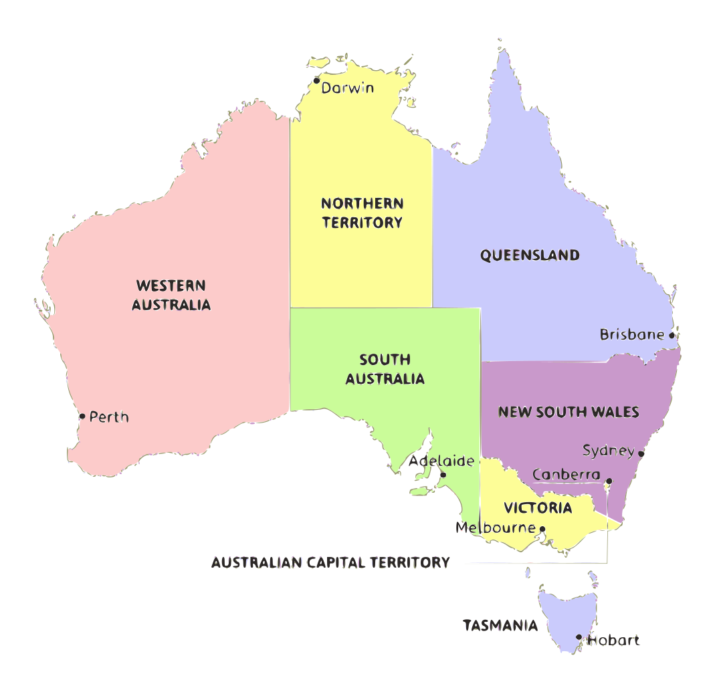

Países
🏠 Início
🇧🇷 Brasil
🇩🇪 Alemanha
🇯🇵 Japão
🇫🇮 Finlândia
🇮🇹 Itália
🇦🇺 Austrália
Mapa da Austrália

Western Australia
Característica
Dados
Clima
Desértico e semiárido (interior) e mediterrâneo (costa)
População
Aprox. 2,7 milhões
Altitude
~0 m a 1.245 m
Vegetação
Desertos, savanas e vegetação rasteira
Fechar
Queensland
Característica
Dados
Clima
Tropical no norte e subtropical no sul
População
Aprox. 5,5 milhões
Altitude
~0 m a 1.622 m
Vegetação
Florestas tropicais, savanas e áreas costeiras
Fechar
New South Wales
Característica
Dados
Clima
Temperado
População
Aprox. 8 milhões
Altitude
~0 m a 2.228 m
Vegetação
Florestas, áreas agrícolas e costeiras
Fechar
Victoria
Característica
Dados
Clima
Temperado oceânico
População
Aprox. 6,7 milhões
Altitude
~0 m a 1.986 m
Vegetação
Florestas temperadas e áreas agrícolas
Fechar